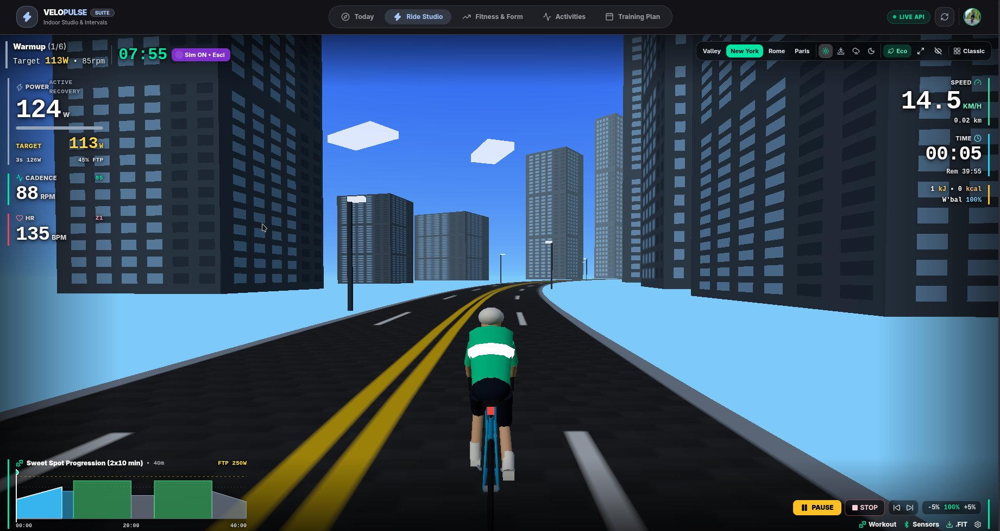
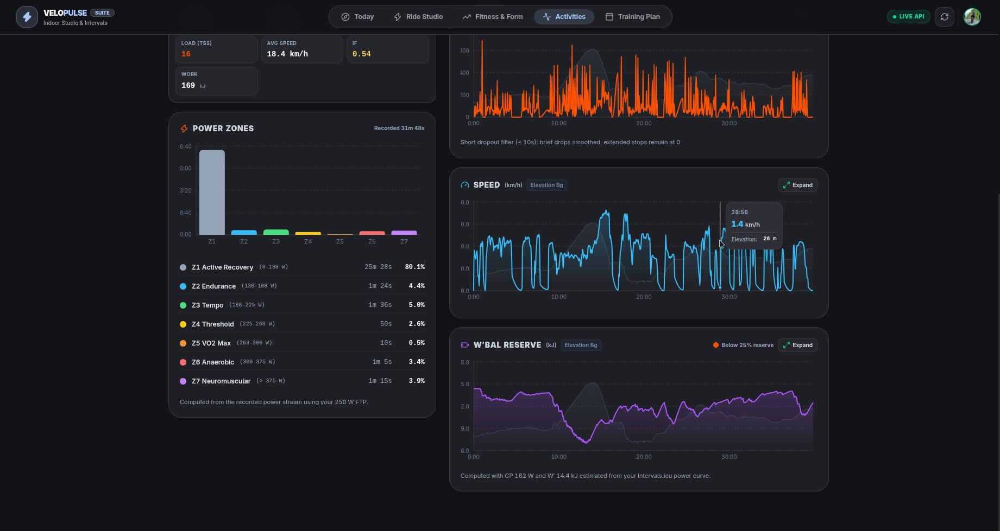

3D Indoor Studio & Performance Analytics
Ride lightweight 3D roads.
Read every watt with clarity.
VeloPulse brings together a full-screen Three.js cycling studio with a frameless telemetry HUD, automatic FTMS trainer control, and deep post-ride analytics—all running smoothly in your browser or desktop app.

3D Graphics & Frameless HUD
Designed to stay out of your way—and light on your GPU
Instead of multi-gigabyte game engines or opaque boxes covering the screen, VeloPulse renders clean low-poly worlds procedurally with floating high-contrast typography anchored to the edges.
Four stylized 3D worlds
Switch instantly between Valley, New York, Rome, and Paris—complete with the Empire State Building, Statue of Liberty, Colosseum, St. Peter's Dome, Eiffel Tower, and glowing illuminated windows at night.
Frameless HUD & Eco 30fps mode
Borderless telemetry with crisp dark shadows keeps live watts and amber target power unmistakable against any sky. Run in ultra-light Eco mode or 60fps, press H to hide the HUD, or toggle back to Classic view anytime.
Articulated cyclist & pedal-to-start
Ride behind an animated 3D road cyclist synchronized 1:1 with your speed alongside overtaking NPC riders. Start pedaling on your FTMS trainer and the session begins automatically—no need to reach for Start.
12 structured workouts & Zwift .zwo
Choose from 12 built-in sessions filtered by category (Recovery,
Endurance, Sweet Spot, Threshold, VO2 Max, Sprint, Test) or drop in
any .zwo file while VeloPulse handles ERG wattage automatically.
Virtual GPS .FIT & permanent storage
Every workout embeds a real scenic GPS loop (Dolomites, Central Park,
Rome, or Paris) inside its .fit file, saves permanently in
VeloPulse with duplicate protection, and uploads to Intervals.icu in one click.
Four lighting atmospheres
Adapt the mood of your pain cave with Day, Golden Hour, Mist, and Night—featuring streetlamps, glowing buildings, and a front bike headlight.
Post-Ride Analytics & Fitness
Every ride, map, and biometric stream in one dark canvas
Open any session—recorded in VeloPulse or synced from Intervals.icu,
Strava, and Garmin .fit—to inspect interactive Leaflet
GPS maps, synchronized telemetry charts, Coggan power zones, W'bal
reserve, and 180-day CTL/ATL fitness trends.

Telemetry & Power Zones
7-zone Coggan distribution, Normalized Power (NP), Intensity Factor (IF), work (kJ), aerobic decoupling (Pw:Hr), and interactive hover tooltips with elevation backdrop.
Critical Power & W'bal
Estimated directly from your recorded power curve to track anaerobic reserve live during workouts and across every post-ride chart.
180-Day Fitness & Recovery
Longitudinal CTL (Fitness), ATL (Fatigue), TSB (Form), HRV, resting HR, sleep, and VO2max—stored permanently in VeloPulse with zero fabricated fallbacks.

Cross-Platform
Run in your browser or install natively
Use VeloPulse directly in Chrome or Edge with Web Bluetooth, or grab a standalone build for Android, Linux, Windows, or macOS.
- Web App (Chrome / Edge) Open app ↗
- Android Download APK ↓
- Linux (AppImage) Download AppImage ↓
- Linux (tar.gz) Download tar.gz ↓
- Windows 11 Download zip ↓
- macOS Download zip ↓
Open-source under the MIT License on GitHub. iOS builds can be compiled from source with Xcode.